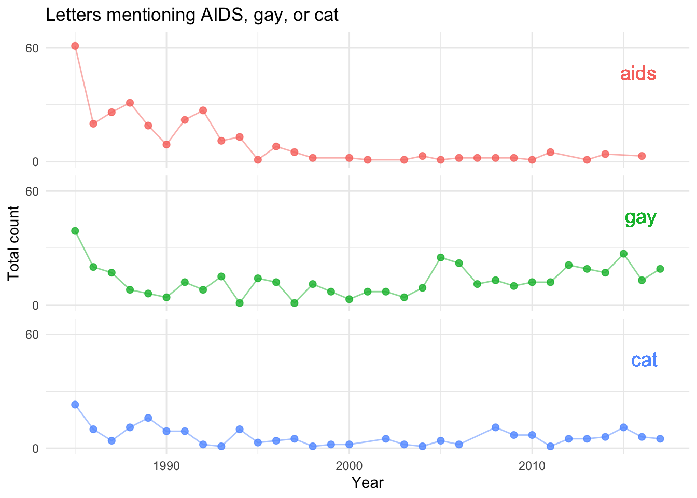

Code
# 1. Save data from The Pudding Github site
#| echo: false
pudding <- read_csv(
"https://raw.githubusercontent.com/the-pudding/data/master/dearabby/raw_da_qs.csv"
)People seeking advice
# 1. Save data from The Pudding Github site
#| echo: false
pudding <- read_csv(
"https://raw.githubusercontent.com/the-pudding/data/master/dearabby/raw_da_qs.csv"
)# 1. Count number of letters per year
#| echo: false
letters_year <- pudding |>
select(year) |>
group_by(year) |>
summarize(count = n())#1. Total number for letters: 20,034
#| echo: false
library(scales)
total_letters <- summarize(letters_year, comma(sum(count))) Seeking advice from friends is not always easy. Not everyone is a good confidant and sometimes our secrets are too embarrasing or too delicate to reveal outloud. For centuries, the truthwordy confidants of people with power were individuals bound by a vow of secrecy, priest for example. With the development of the printed press and later the radio, people found a chance to anonimously shared their stories and ask for advice.
In Spain the most famous radio advice show, El Consultorio de Elena Francis, run continuously from 1947 to 1984. For nearly four decades, millions of Spanish women tuned in or wrote letters to Señora Francis seeking guidance on personal issues, relationship struggles, family drama, and domestic problems. Interestingly, the show became the moral watchdog of the Franco regime. The responses broadcasted reflected the conservative, patriarchal, and Catholic values endorsed by the Francoist regime. Advice frequently encouraged women to endure infidelity, domestic hardship, or mistreatment, emphasizing patience, devotion, and submission to preserve the family structure.
The Señora Francis of the USA is Dear Abby, a column that has been runnng countiously since 1956 and has been sindycated in more than 1,200 newspapers. The letters sent to Dear Abby have been compilated by The Pudding, an award-winning digital publication that creates visual essays and interactive data visualizations to explain culturally debated topics and complex ideas.
In the The Putting article, 30 Years of American Anxietis, authors Ilia Blinderman, Caitlyn Ralph, and Russell Samora (with illustrations by Thoka Maer) identify the most debated topics by Dear Abby readers: sex, religion, and LGBTQ issues. The articule includes many of the letters that are worth reading!
Here, I do my own analysis of 20,034 Dear Abby letters from 1985 to 2017 from an archive which can be found in the The Pudding Github site.
I am using word clouds to attempt to reveal some of the most prevalent topics of the letters. No filters were applied to the first cloud below which includes 20,034 letters written from 1985 to 2017. Thus, words like abby appear, as expected, with high frequency. For the clouds for specific years, I have removed a list of words including Abby, dear, advice, letter, and letters.

#1. Make list of words to remove in addtion to default stop_words (to, and, she)
#| echo: false
# Define your custom words to ignore
custom_stops <- tibble(word = c("abby", "ago", "advice", "dear", "letter", "letters"))


The word “husband” is consistenly one of the most frequently used in these letters throughout several decades. Is that because women are the main writters to Abby? In order to investigate this a bit further, I have selected letters that include the words “my husband” and “my wife” hoping that this indentifies the writer. This is obviously not a perfect strategy. The word clouds below come from those letters. Assuming that the writers are talking about their partners, what can the word frequencies tell us about the letters? Are the themes different? Have they changed through time?


The plots below track the change through the years in the frequency of the most used words in the letters. The frequencies were calcuated by selecting the top 100 most frequent words for each individual year.
#|echo : false
# Generate table with the 100 more frequent words by year
# It evaluates every year independently and pulls out the top 100 most frequent words for each individual year.
words_by_year <- pudding %>%
group_by(year) %>%
select(question_only) %>%
drop_na(question_only) %>%
unnest_tokens(word, question_only) %>%
# Remove expected/un-informative words
anti_join(stop_words, by = "word") %>%
anti_join(custom_stops, by = "word") %>% # Removes YOUR custom words
# Filter out numbers or non-alphabetical tokens if desired
filter(str_detect(word, "^[a-z]+$")) %>%
count(word, sort = TRUE) %>%
slice_max(n, n = 100)#|echo : false
# 1. Calculates the percentages for each word in the year.
words_by_year_prop <- words_by_year %>%
group_by(year) %>%
mutate(year_total = sum(n, na.rm = TRUE)) %>%
mutate(prop = n * 100 / year_total) |>
ungroup()
words_by_year_prop_w <- words_by_year_prop %>%
group_by(word) %>%
mutate(word_total = sum(n, na.rm = TRUE)) %>%
mutate(year = as.numeric(year)) |>
ungroup() |>
arrange(desc(word_total)) # 1. Identify the top 10 words based on word_total
top_10_words <- words_by_year_prop_w %>%
distinct(word, word_total) %>%
slice_max(word_total, n = 10) %>%
pull(word)
# 2. Filter your dataset for only those top 10 words and plot
words_by_year_prop_w %>%
filter(word %in% top_10_words) %>%
ggplot(aes(x = year, y = prop, color = word)) +
geom_point(alpha = 0.8, size = 2) +
geom_line(alpha = 0.5) +
labs(
title = "percentage of the 10 top words over time",
x = "Year",
y = "",
color = "Word"
) +
theme_minimal()
library(tidyverse)
# 1. Identify the top words (can change number below)
top_words <- words_by_year_prop_w %>%
distinct(word, word_total) %>%
slice_max(word_total, n = 5) %>%
pull(word)
# 2. Create the stacked facet plot
words_by_year_prop_w %>%
filter(word %in% top_words) %>%
ggplot(aes(x = year, y = prop, color = word)) +
geom_point(alpha = 0.8, size = 2) +
geom_line(alpha = 0.5) +
facet_wrap(~ word, ncol = 1, scales = "fixed") + # Uses the same scale for all panels
scale_y_continuous(
limits = c(0, 4.5), # Forces the axis to run from 0 to 4
breaks = c(0, 4), # Places tick marks at both 0 and 4
labels = c("0", "4") # Displays labels for both 0 and 4
) +
labs(
title = "percentage of the five top words over time",
x = "Year",
y = "",
color = "Word"
) +
theme_minimal() +
theme(legend.position = "none") # Optional: hides legend since each panel is already labeled
The letters below were selected by filtering using my husband and then searching for the word adultery or cheat.
# 1. Filter all letters and my husband
texto <- pudding %>%
select(question_only) %>%
drop_na(question_only) %>%
filter(str_detect(question_only, "my husband"))
# 2. Get letters matching cheat or adultery
matching_texts <- texto$question_only[
str_detect(texto$question_only, "(?i)cheat") |
str_detect(texto$question_only, "(?i)adultery")
]
# 3. Randomly sample 5 lines (change 3 to 1 or 2 as needed)
# sample(x, size) picks 'size' random elements from vector 'x'
random_sample <- sample(matching_texts, size = 5)
# 4. Print them out fully without truncation
# writeLines(random_sample)
# 5. Print text in color box and number letters in title
for (i in seq_along(random_sample)) {
txt <- random_sample[i]
cat('<div style="background-color: #f0f4f8; border-left: 4px solid #3182ce; padding: 15px; margin-bottom: 10px; border-radius: 4px;">\n')
# Use paste() to dynamically insert the number 'i'
cat(paste0('<strong>Letter ', i, '</strong><br>\n'))
cat(txt, '\n')
cat('</div>\n\n')
}Letter 1
i have been married for 20 years to my high school sweetheart. he’s a great father and a hard worker. he has always been good to me – until a year ago when he came to me and confessed that he’d cheated on me with my best friend. i was devastated. the friendship was over, and i made my husband leave. after things calmed down, we decided to try and work things out because we still loved each other and wanted to try – not just for us – but for our children. i’m trying to pick up the pieces and trust him again, but there’s a problem. his job takes him out of town for days at a time, and when he comes home, i’m always checking his cell phone and credit card bills for any sign that he’s been unfaithful again. it’s been more than a year, but i still don’t trust him – or anyone, for that matter. when he’s home, we argue a lot. the other day, he said, “let’s get the kids, take off for the weekend and renew our vows, because i want to spend the rest of my life with you.” our anniversary is coming up, but i thought it was an odd suggestion, given all our problems. i’m confused and deeply hurt and don’t know what i should do. can you help me? – no longer trusting in california
Letter 2
my husband has erectile dysfunction for which he takes medication. he gets it from a friend. i have discovered he takes the medication with him when he travels. he swears he isn’t cheating on me and that he’s faithful. should i believe him? – suspicious in arizona
Letter 3
my husband cheated on me and told me to find somebody else. he moved in with the other woman and spread lies about me, telling my in-laws that i had cheated on him. he was on probation, so i reported to his probation officer that he was lying about where he was living. he was arrested for it. he is now incarcerated and facing a two-year prison sentence. we’re trying to work on our marriage, but i haven’t told him that i’m the person who reported him to his probation officer. i’m still angry at him for cheating on me. when i write him, i tend to bring up what he did when he was out. i have told him i forgave him, but lately, i don’t even take time to respond to his letters. what should i do? – just plain angry
Letter 4
i recently tried to retrieve my e-mail when my husband’s e-mail account popped up. i noticed a few messages from one particular woman, and curiosity got the better of me. i opened them and discovered she and my husband have been chatting online. (his e-mail to her indicates they have “hot” conversations.) when i confronted my husband, he said it only happened a few times. i told him it’s a form of cheating. he insists it has nothing to do with his love for me – that it is a fantasy thing. i don’t care for his explanation, and i’m taking it personally. i can’t forget the things i read and i’m considering ending our marriage. because he is not carrying on a physical relationship with someone doesn’t mean his online relationship isn’t as damaging. do you agree? – betrayed in new jersey
Letter 5
i recently divorced my husband of nine years because i found out he was having an affair. he actually introduced her to people that we both knew. i ended up hiring an off-duty police officer so i could get the proof (pictures). it turned out she was one of my husband’s co-workers, and the affair had been going on for three years. i ended up divorcing him, but the woman’s husband decided to forgive her. my ex hates my guts because she chose to remain with her husband. abby, i am so ashamed. how could i not have known? we had not slept together since our daughter was born; she is 6 years old now. he blames the whole affair on me. he says i was not doing my wifely duty and that’s what made him cheat. well, i just didn’t feel that close to him. he had been verbally and physically abusive prior to our daughter’s birth and afterward. he was terrible to my parents and called them names. he never paid any bills nor helped me with our daughter. to this day he hates me so much he can’t stand to look at me because he has to pay child support. he has every other weekend with our daughter, and it kills him to come and pick her up. he was a sorry excuse for a husband and not much better as a father. the problem is – if he wanted to come back, i believe i would take him back. why do i feel like this? is there something wrong with me? do i need counseling? – dazed and confused
The letters below were selected by filtering using my wife and then searching for the words adultery and cheat.
#|echo : false
# 1. Filter all letters and my wife
texto <- pudding %>%
select(question_only) %>%
drop_na(question_only) %>%
filter(str_detect(question_only, "my wife"))
# 2. Get letters matching cheat and adultery
matching_texts <- texto$question_only[
str_detect(texto$question_only, "(?i)cheat") |
str_detect(texto$question_only, "(?i)adultery")
]
# 3. Randomly sample 5 lines (change 3 to 1 or 2 as needed)
# sample(x, size) picks 'size' random elements from vector 'x'
random_sample <- sample(matching_texts, size = 5)
# 4. Print them out fully without truncation
# writeLines(random_sample)
# 5. Print text in color box and number letters in title
for (i in seq_along(random_sample)) {
txt <- random_sample[i]
cat('<div style="background-color: #f0f4f8; border-left: 4px solid #3182ce; padding: 15px; margin-bottom: 10px; border-radius: 4px;">\n')
# Use paste() to dynamically insert the number 'i'
cat(paste0('<strong>Letter ', i, '</strong><br>\n'))
cat(txt, '\n')
cat('</div>\n\n')
}Letter 1
my wife and i have a good marriage and two well-behaved kids who are good students and active in our community. our 8-year-old son is very much the rule follower in school and outside activities, but cheats when playing board or card games with me or his sister at home. when i catch him doing it, i end the game and tell him i won’t play with him if he’s going to cheat. my wife believes the cheating is “just for fun” and that i’m being too hard on him. i say the lesson i’m teaching him is that cheating is wrong. we agree we are fortunate this happens only at home, but i’m concerned that if it is left unchecked, it will be regarded as permissible and it will escalate to become a problem in other circumstances. what do you think? should i let up? – virginia dad
Letter 2
today i witnessed what may be the end of a marriage, and it was because of a professional health care worker’s unwise remark. my wife was having a colonoscopy, and there was one large recovery room where patients coming out of anesthesia were grouped. (there were curtains separating the patients.) while i was waiting for my wife to awaken, i overheard a nurse talking to the wife of the patient next to us. she said, “you know, you can find out anything from them when they’re coming out of anesthesia. they are completely incapable of lying.” she said it in a lighthearted way – sort of giggling. a few minutes later, i heard the wife ask in a hushed voice, “bart, have you ever cheated on me?” “yes,” he moaned, “with mary helen.” i heard the wife choke back a sob and she ran from the room. it was another 45 minutes before my wife was ready to leave, and the woman did not return during that time. abby, i think it was ridiculous for that nurse to pass on the information that prompted this scene. should i let the doctor know about his nurse’s unwise comment? – mike in tucson, ariz.
Letter 3
after six years of marriage and a beautiful daughter, my wife, “chanelle,” demanded a separation. she said she needed time to “find herself.” she forgot to mention that she was having an affair with a subordinate at work, “earl.” eventually, earl’s wife and i found out. chanelle lost her job, her boyfriend and her self-respect. suddenly she wanted me back. i wasn’t sure i could live with a woman who had lied and cheated on me. after a year later, chanelle became pregnant with our son, who is due in a few months. i’m positive the baby is mine, so we decided for the children’s sake to reconcile. i still can’t forgive chanelle for the affair. she used a string of lies to cover her activities, so i’m having severe trust issues. i was faithful throughout our marriage. while we were separated, i frequently lent her money and ran errands for her. at the time, she told me she hadn’t been in love with me since the birth of our daughter. now i feel used. during our separation, i made sure our daughter called chanelle’s parents every night. we spent holidays with them while chanelle worked. instead of thanking me for it, they insist that i drove their daughter into the arms of another man. to make things worse, my parents refuse to accept chanelle back into the family. in all fairness, chanelle was the last person you’d think would have an affair. she was family-oriented and had conservative values. earl was the last person you’d imagine she’d choose. he’s a chain-smoking, married redneck with a history of infidelity. both sets of in-laws are trying to sabotage the marriage, my feelings for my wife have changed, and i now realize i never really knew chanelle at all. can this marriage be saved? – shaken, not stirred in west virginia
Letter 4
my job requires me to travel out of town several nights a week, leaving my wife home alone. she recently invited a mutual (male) friend out for dinner during my absence. he’s the other half of a couple we socialize with frequently. (his wife was also out of town.) i told her i was uncomfortable with it. i don’t think married men and women should go out alone with members of the opposite sex. she maintains that it wasn’t a “date,” that she was just having a meal with a friend. i value your opinion and would like to know how you feel about this. did i overreact? is it appropriate for a married woman to go out for a meal alone with a man other than her husband? – feeling cheated on in illinois
Letter 5
my wife and i have been married five years and have a beautiful 4-year-old daughter. two years ago, my wife cheated on three different occasions with three different men. each time she admitted her infidelity to me the following day. i was heartbroken. i have fallen out of love with her and no longer find her attractive. i didn’t leave immediately because i didn’t want our daughter to be raised in a broken home. also, my wife didn’t have a job. i thought i could forgive her and get over it, but i can’t and don’t think i ever will. should i leave her or stay in a marriage where i feel i am being unfair to myself and that i deserve better? please advise. – betrayed in kansas
Although Dear Abby was first published in The San Francisco Chronicle on January 9, 1956, the data analyzed here ranges from 1985 to 2017. The AIDS (Acquired Immune Deficiency Syndrome) pandemic officially began on June 5, 1981, when the U.S. Centers for Disease Control and Prevention (CDC) published a report detailing a rare form of pneumonia (Pneumocystis carinii) in five young gay men in Los Angeles. In 1985, the U.S. Food and Drug Administration (FDA) approved the first commercial blood test for HIV (Human Immunodeficiency Virus), allowing blood banks to screen donations. Public fear peaked following high-profile diagnoses, such as actor Rock Hudson publicizing his illness before dying in October 1985.
Did the Dear Abby letters reflect the public preocupation for the AIDS pandemic in the 1980s? Below are plots showing the number of letters that included the words AIDS and gay or homosexual. For comparison, letters containing the word cat are also displayed.
#1. Make list of words of ineterest
interest_words <- tibble(word = c("gay", "aids", "homosexual","cat"))
# 2. Compute your main data for gay/homosexual and aids
gay_by_year <- pudding %>%
group_by(year) %>%
select(question_only) %>%
drop_na(question_only) %>%
unnest_tokens(word, question_only) %>%
# Remap "homosexual" to "gay" before filtering
mutate(word = case_when(
word == "homosexual" ~ "gay",
TRUE ~ word
)) %>%
# Remove expected/un-informative words
anti_join(stop_words, by = "word") %>%
# Filter out numbers or non-alphabetical tokens if desired
filter(str_detect(word, "^[a-z]+$")) %>%
# KEEP ONLY your specific interest words
semi_join(interest_words, by = "word") %>%
count(word, sort = TRUE) |>
# REORDER: Convert word to a factor with "cat" at the very end
mutate(word = factor(word, levels = c("aids", "gay", "cat")))
# 3. Create the stacked facet plot
gay_by_year %>%
ggplot(aes(x = year, y = n, color = word)) +
geom_point(alpha = 0.8, size = 2) +
geom_line(alpha = 0.5) +
facet_wrap(~ word, ncol = 1, scales = "fixed") +
# Adds larger labels inside the top-right corner of each panel
geom_text(
data = function(x) {
# Automatically finds the max year for each facet to place it on the right
transform(x, max_year = max(year))
},
aes(x = max_year, y = 47, label = word, color = word),
hjust = 1.1, # Pushes it slightly away from the right edge
size = 5, # Makes the label text larger
# fontface = "bold", # Makes the label text bold
show.legend = FALSE
) +
scale_y_continuous(
limits = c(0, 65), # Forces the axis to run from 0 to 65
breaks = c(0, 60), # Places tick marks at 0 and 60
labels = c("0", "60") # Displays labels for 0 and 60
) +
labs(
title = "Letters mentioning AIDS, gay, or cat",
x = "Year",
y = "Total count",
color = "Word"
) +
theme_minimal() +
theme(
legend.position = "none",
strip.text = element_blank() # Hides the original facet headers since they are now inside
)